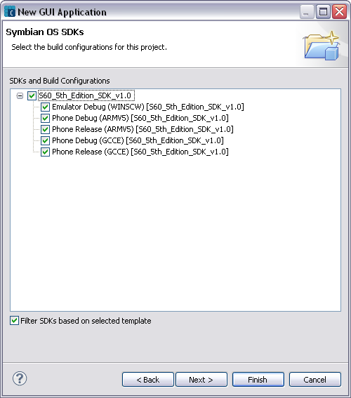

You can set the SDKs and Build Configurations in this page. The available SDKs shown are determined by the settings in the SDK Preferences page.

| Name | Functions |
|---|---|
|
SDKs and Build Configurations |
Specifies the SDKs and Build Configurations set for the project being created. You can select multiple SDKs and build configurations for a project. |
| Filter SDKs based on selected template | By default, the Symbian OS SDKs page only displays the templates related to the SDKs used by the project. Uncheck to view all available templates. |
NOTE The number and type of SDKs shown are dependent upon the SDKs installed and recognized by Carbide.c++.